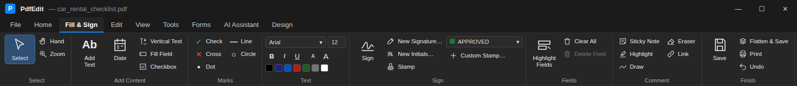
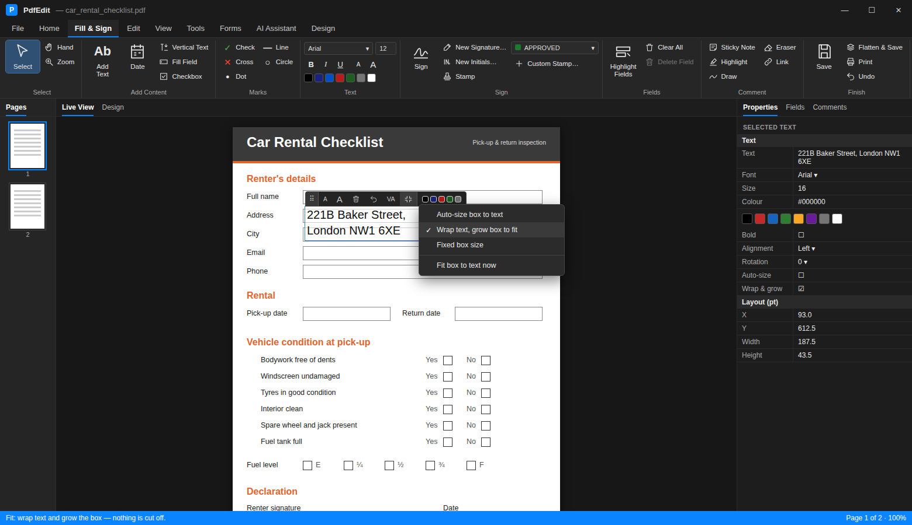
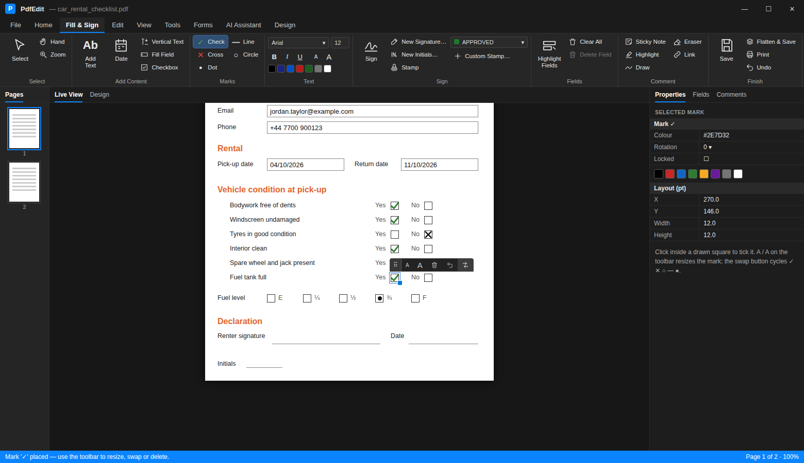
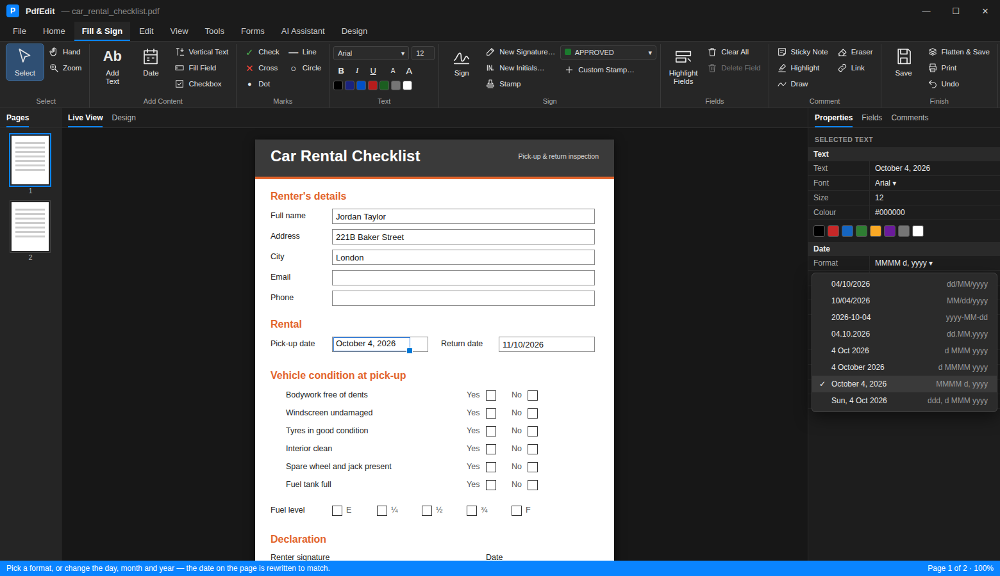
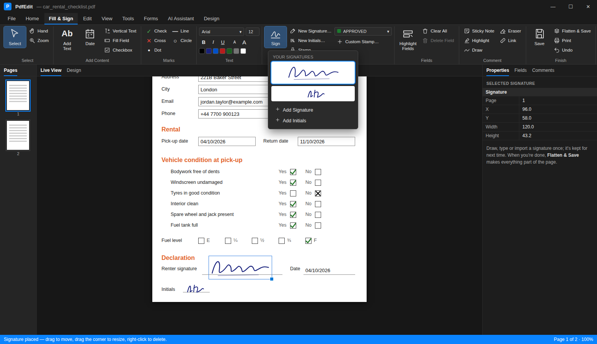

User guide > Using PdfEdit
Filling and signing
Here's a flat form (no fields, just boxes printed on the page) being filled in, ticked, signed and saved in Live View:

All of the tools below are on the Fill & Sign tab:

Forms with fillable fields#
Open the PDF (Ctrl+O, or drag it onto the window) and click a field to type in it. Check boxes and radio buttons toggle when you click anywhere inside them. Date fields have a small calendar button.
When a document has fields, a bar across the top offers two things:
- Highlight Existing Fields shades every field light blue so the empty ones are easy to spot. Required fields get a red outline.
- Prepare Form switches to editing the fields themselves (see Preparing forms).
To check you haven't missed anything, use Forms > Validate. It lists the empty required fields and jumps to the first one.
Flat PDFs (no fields)#
Plenty of forms are just lines and boxes printed on the page. You can still fill these. With the Select or Add Text tool, click inside a drawn box and PdfEdit lines the text up with it. A click in a small square box puts a tick there instead.
Adding text#
Add Text (Fill & Sign tab, or press T) puts a text box wherever you click. A small toolbar sits above the selected box:
- the grip to drag it around
- A / A to make the text smaller or larger
- delete, rotate 90°, and character spacing (handy for lining up with comb boxes)
- Fit, which decides what happens when the text is bigger than the box: grow the box to fit, wrap the text and make the box taller, or keep the box a fixed size
- a row of colours
Everything else, including font, bold and italic, alignment and exact position, is in the Properties panel.

Ticks, crosses and dates#
The Marks group places ticks (✓), crosses (✕), dots (●), circles (○) and short lines. They're drawn as shapes rather than font characters, so they look the same in every PDF reader. Resize them with the corner handle or the A / A buttons.

Date stamps today's date. Select it afterwards and the Properties panel lets you pick another format (dd/MM/yyyy, MM/dd/yyyy, 4 October 2026 and so on) or change the day, month and year.

Signatures#
Click Sign to place your signature, or use New Signature... to draw, type or import one first. New Initials... does the same for initials. Saved signatures are kept for next time.

Saving#
Save (Ctrl+S) keeps the fields editable. Flatten & Save merges everything into the page, so it can't be changed afterwards. Use it for the copy you send out.